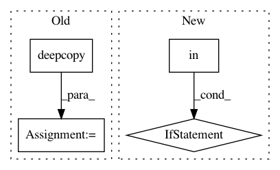

932220257ae4c5a0c7b0eaf784fb6410c9bd20eb,plasma/models/mpi_runner.py,,mpi_train,#Any#Any#Any#Any#Any#Any#,646
Before Change
mpi_model.set_batch_iterator_func()
if "monitor_test" in conf["callbacks"].keys() and conf["callbacks"]["monitor_test"]:
conf_curr = deepcopy(conf)
T_min_warn_orig = conf["data"]["T_min_warn"]
for T_min_curr in conf_curr["callbacks"]["monitor_times"]:
conf_curr["data"]["T_min_warn"] = T_min_curr
assert(conf["data"]["T_min_warn"] == T_min_warn_orig)
if shot_list_test is not None:
_,_,_,roc_area_t,_ = mpi_make_predictions_and_evaluate(conf_curr,shot_list_test,loader)
print_unique("epoch {}, test_roc_{} = {}".format(int(round(e)),T_min_curr,roc_area_t))
//epoch_logs["test_roc_{}".format(T_min_curr)] = roc_area_t
_,_,_,roc_area_v,_ = mpi_make_predictions_and_evaluate(conf_curr,shot_list_validate,loader)
print_unique("epoch {}, val_roc_{} = {}".format(int(round(e)),T_min_curr,roc_area_v))
//epoch_logs["val_roc_{}".format(T_min_curr)] = roc_area_v
epoch_logs["val_roc"] = roc_area
epoch_logs["val_loss"] = loss
epoch_logs["train_loss"] = ave_loss
best_so_far = cmp_fn(epoch_logs[conf["callbacks"]["monitor"]],best_so_far)
After Change
if hasattr(mpi_model.model,"stop_training"):
stop_training = mpi_model.model.stop_training
if best_so_far != epoch_logs[conf["callbacks"]["monitor"]]: //only save model weights if quantity we are tracking is improving
if "monitor_test" in conf["callbacks"].keys() and conf["callbacks"]["monitor_test"]:
print("No improvement, saving model weights anyways")
else:
print("Not saving model weights")
specific_builder.delete_model_weights(train_model,int(round(e)))
//tensorboard
if backend != "theano":
val_generator = partial(loader.training_batch_generator,shot_list=shot_list_validate)()
val_steps = 1
tensorboard.on_epoch_end(val_generator,val_steps,int(round(e)),epoch_logs)
In pattern: SUPERPATTERN
Frequency: 3
Non-data size: 4
Instances
Project Name: PPPLDeepLearning/plasma-python
Commit Name: 932220257ae4c5a0c7b0eaf784fb6410c9bd20eb
Time: 2018-03-24
Author: jk7@tigergpu.princeton.edu
File Name: plasma/models/mpi_runner.py
Class Name:
Method Name: mpi_train
Project Name: idaholab/raven
Commit Name: e8c8bd77966e726e0632b9c5822a995732662fb1
Time: 2017-09-25
Author: andrea.alfonsi@inl.gov
File Name: framework/Optimizers/SPSA.py
Class Name: SPSA
Method Name: localStillReady
Project Name: idaholab/raven
Commit Name: cd67dba10273d0d9c3d7ab331fcc3580efdd4d9c
Time: 2020-12-08
Author: andrea.alfonsi@inl.gov
File Name: framework/CodeInterfaces/MELCOR/MELCORdata.py
Class Name: MELCORdata
Method Name: returnVolumeHybro